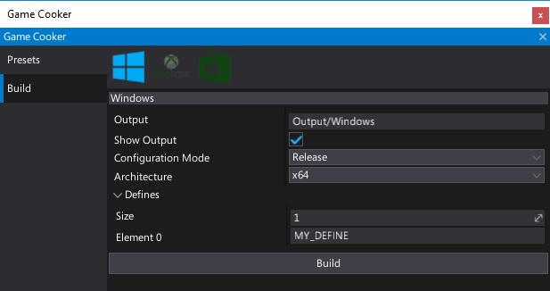
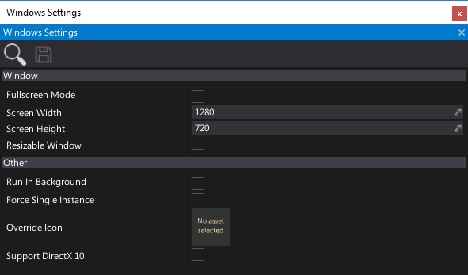

Windows
Technical information
Flax is compiled for Windows platform using Microsoft Visual C++ compiler. It uses v140 toolset (VC++ 2015) and Windows 10 SDK (or Windows 8.1 SDK) with Multi-Threaded DLL runtime.
Note
Flax requires Visual C++ Redistributable for Visual Studio 2015 to be installed on Windows in order to start.
Build options

| Property | Description | ||||||||
|---|---|---|---|---|---|---|---|---|---|
| Output | The builded game output folder (relative to the project). | ||||||||
| Show Output | If checked, after building the output folder will be shown in an Explorer. | ||||||||
| Configuration Mode | Game building mode. Possible options:
|
Platform settings

| Property | Description | ||||||||||
|---|---|---|---|---|---|---|---|---|---|---|---|
| Window Mode | The default game window mode. Possible options:
|
||||||||||
| Screen Width | The default game window width (in pixels). | ||||||||||
| Screen Height | The default game window height (in pixels). | ||||||||||
| Resizable Window | Enables resizing the game window by the user. | ||||||||||
| Run In Background | Enables game running when application window loses focus. | ||||||||||
| Force Single Instance | Limits maximum amount of concurrent game instances running to one, otherwise user may launch application more than once. | ||||||||||
| Override Icon | Custom icon texture to use for the application (overrides the default one). | ||||||||||
| Support DirectX 12 | Enables support for DirectX 12. Disabling it reduces compiled shaders count. | ||||||||||
| Support DirectX 11 | Enables support for DirectX 11. Disabling it reduces compiled shaders count. | ||||||||||
| Support DirectX 10 | Enables support for DirectX 10 and DirectX 10.1. Disabling it reduces compiled shaders count. | ||||||||||
| Support Vulkan | Enables support for Vulkan. Disabling it reduces compiled shaders count. |